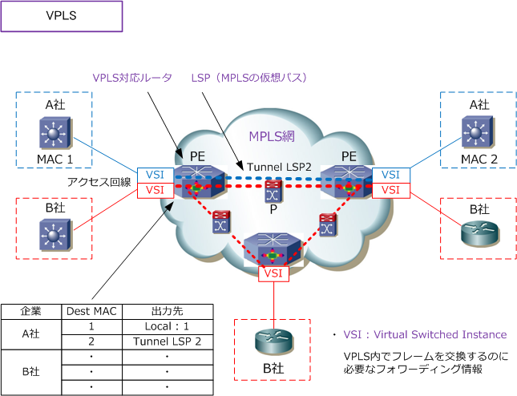
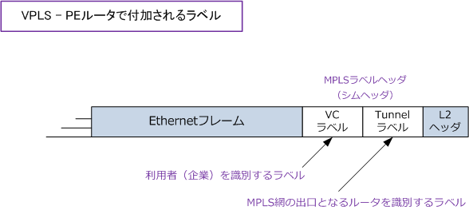

VPLS （Virtual Private LAN Service）
VPLS（Virtual Private LAN Service）とは
VPLS（仮想プライベートLANサービス）は、MPLSを使用してEthernetフレームを転送させることが できる技術のことです。MPLS網上で、仮想的なEthernet LANをVPNごとに構築できることからも、 利用するプロトコルはIPに依存しないため、いわゆるLayer 2 VPNを提供することができる技術です。 VPLSにより、地理的に分散されたEthernet LANサイトをMPLSバックボーン全体で相互接続できます。
先ず、広域イーサネットサービスで、VPLSがどのような位置づけにあるのか見てみましょう。
広域イーサネットの3つの実装方式
キャリアの提供する広域イーサネットのWANサービスは、大きく3つの実装方式があります。
1. Q-in-Q（ IEEE802.1ad ） イーサネットフレームにタグを二重に付与する方式です。スタックドVLANとも呼ばれます。
2. MAC-in-MAC（ IEEE802.1ah ） 広域イーサネット網内だけに有効なMACアドレスを使用して、MACフレームをMACフレームで カプセル化する方式です。PBB（Provider Backbone Bridging）とも呼ばれます。
3. VPLS（Virtual Private LAN Service） VPLSはMPLSプロトコルを利用した方式です。VPLSは、EoMPLSの1つの形態とも言えます。 VPLSでは、広域イーサネットサービス（WANサービス）をルータで構築することができます。
VPLSの仕組み
VPLSでは、MPLSで利用するラベルごとの仮想的な伝送路であるLSPを、PEルータ同士でフルメッシュに 張ることにより、EthernetフレームをMPLSを使用しMultipoint to Multipointで転送することができます。
VPLSとMPLSとの違いは、利用者（企業）から送信されるパケットをIPアドレスではなくMACアドレスに 基づき転送することができる点です。PEルータ（VPLSルータ）では、企業ごとのMACアドレスと転送先 パスの対応テーブルを持っており、その情報に基づいてラベルを付加して転送します。
MPLS網内のコアルータ（Pルータ）はそのラベルに基づきフレームを転送するだけでよく、コアルータは MACアドレスを学習する必要はありません。

LANスイッチの場合、RSTPを実装しても障害発生時の切り替わりが約1秒は必要となってしまいますが、 VPLSルータの場合には、Fast Rerouteと呼ばれる機能によって、障害発生時に迂回経路にミリ秒レベル にまで高速収束（パスの移行）を実現することが可能になります。
そして、VPLSではMPLSベースの冗長化機能が使えるだけではなく、MPLS網側から受信したフレームを MPLS網側には戻さないスプリットホライズン機能によりループも防止できます。
VPLSの仕組み - 2つのラベル
VPLSでは、ユーザ側から転送されるイーサネットフレームに、キャリア側のPEルータ（VPLSルータ）で 2つのラベル付けが行われます。TunnelラベルとVCラベルの2つです。

| VPLSのラベル | 説明 |
|---|---|
| Tunnelラベル | PEルータ、Pルータ、PEルータ間のトンネルで転送するための外側のラベル。 |
| VCラベル | ユーザ側のイーサネットフレームを識別するための内側のラベル。 |